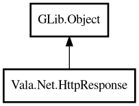

HttpResponse
Object Hierarchy:

Description:
public class HttpResponse : Object
Represents an HTTP response.
Provides access to the status code, headers, and body of the response returned by an HTTP request.
Example:
var resp = Http.get ("http://localhost:8080/hello");
if (resp.isSuccess ()) {
print (resp.bodyText ());
}
Content:
Methods:
- public uint8[] bodyBytes ()
Returns the response body as raw bytes.
- public string bodyText ()
Returns the response body as a UTF-8 string.
- public int64 contentLength ()
Returns the Content-Length header value.
- public string? contentType ()
Returns the Content-Type header value.
- public string? header (string name)
Returns the value of a response header.
- public HashMap<string,string> headers ()
Returns all response headers as a HashMap.
- public bool isClientError ()
Returns true if the status code is 4xx (client error).
- public bool isRedirect ()
Returns true if the status code is 3xx (redirect).
- public bool isServerError ()
Returns true if the status code is 5xx (server error).
- public bool isSuccess ()
Returns true if the status code is 2xx (success).
- public int statusCode ()
Returns the HTTP status code.
Inherited Members:
All known members inherited from class GLib.Object
- @get
- @new
- @ref
- @set
- add_toggle_ref
- add_weak_pointer
- bind_property
- connect
- constructed
- disconnect
- dispose
- dup_data
- dup_qdata
- force_floating
- freeze_notify
- get_class
- get_data
- get_property
- get_qdata
- get_type
- getv
- interface_find_property
- interface_install_property
- interface_list_properties
- is_floating
- new_valist
- new_with_properties
- newv
- notify
- notify_property
- ref_count
- ref_sink
- remove_toggle_ref
- remove_weak_pointer
- replace_data
- replace_qdata
- set_data
- set_data_full
- set_property
- set_qdata
- set_qdata_full
- set_valist
- setv
- steal_data
- steal_qdata
- thaw_notify
- unref
- watch_closure
- weak_ref
- weak_unref